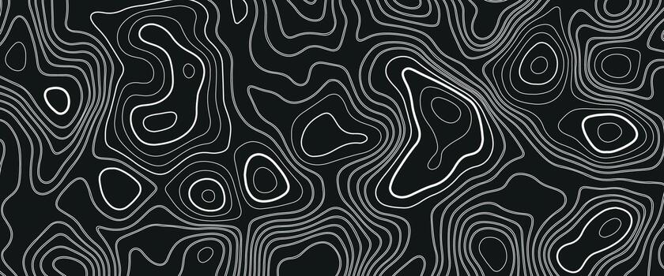

System v49.0 Online
Autonomous
Autonomous
Mesh Reality
The Arttous Platform combines high-torque 12-DOF kinematics with the T3S3 LoRa Ranging System for sub-meter localization in GNSS-denied environments.
Kinematic Core
Custom Inverse Kinematics (IK) engine running on ESP32-C6. Solves 12-DOF leg positioning in real-time (25Hz loop).
T3S3 Mesh Ranging
Hardware-accelerated Time-of-Flight (ToF) using Semtech SX1280 (2.4GHz) for precise anchor localization.
Active Stabilization
Integrated MPU-6050 sensor fusion dynamically adjusts roll and pitch to maintain a level horizon.
Technical
Datasheet
Current build configuration for the "Turbo Interceptor" prototype (v49.0).
| Main Controller | ESP32-C6 (RISC-V) |
| Localization | LILYGO T3S3 (SX1280) |
| Actuation | 12x MG90S Metal Gear |
| Precision | 0.5m – 1.5m |

Anchor Matrix
Localization Protocol
The T3S3 Ecosystem
Unlike GPS, Arttous utilizes a local Ranging Mesh. Three stationary anchors create a triangulation field.
View Topology DiagramDeployment Logic
01Anchor Drop
02Auto-Calib
03Robot Init
04Mesh Lock
05Run